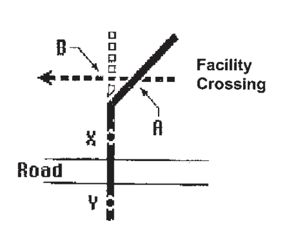
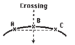
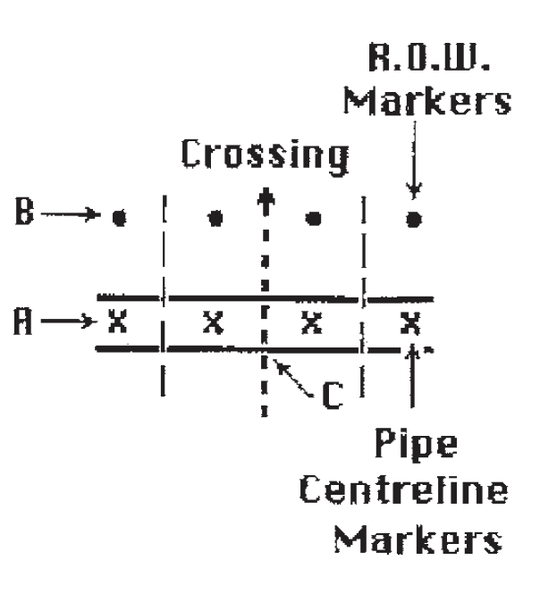
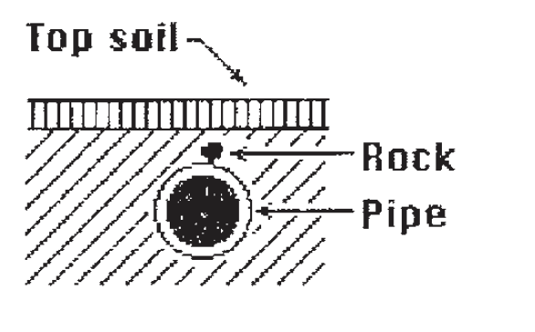
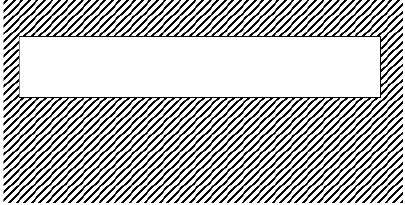
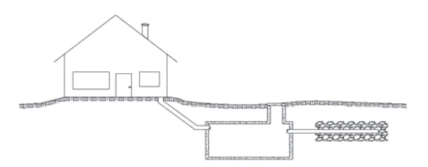

What Is Working Near Buried Facilities?
Any activity that disturbs the ground in the control/prescribed area of a buried facility (30 meters on either side of the buried facility).
Working near buried facilities includes:
- excavation
- digging
- trenching
- drilling
- pipe pushing
- topsoil stripping
- grading
- ditch shaping
- land leveling
- tunneling or boring
- rock picking
- tree planting
- blasting
- vibrosis
- logging
- subsoil aeration
- plowing pipe or cable
- driving over or parking on right of ways
- vertical & horizontal augering
- driving bars, posts or anchors
- fire fighters cutting fire breaks
- removing buried facilities
- or any other activity which disturbs the ground near any buried facility
What Are Buried Facilities?
Any item located below the surface of the ground! These facilities may be privately (landowner) or publicly owned.
They include:
- pipes
- conduits
- manholes
- duct banks
- wires
- fiber optics
- cables
- lines
- valve chambers
- culverts
- catch basins
- attachments to these items
These facilities are used for the transmission, distribution, storage or collection of:
- water
- sewage
- electrical energy
- oil
- natural gas
- petroleum products
- chemicals
- communications
- steam
- storm water
- cablevision
- other substances
Where Buried Facilities May Be Found.
An extensive network of buried facilities may be found at depths, ranging from just below the surface to very deep. This makes all these facilities susceptible/vulnerable to damage by ground disturbance activities. These facilities may be found on public or private property, rights of way or easements. In other words, buried facilities can be found anywhere at any depth.
In urban areas and on private property, many facilities are within 300mm of the ground surface. Street light wires are often just below the sidewalk. Communication and electrical duct banks in downtown cores may be just under the asphalt.
The depth of initial cover over buried facilities may be substantially reduced where they have floated in wet areas or due to landscaping, soil erosion or agricultural activity.
How Can Buried Facilities Be Damaged?
Even minor nicks and gouges on pipelines and other buried facilities are serious. Corrosion could occur rapidly causing leaks, possible emergency situations, and the interruption of utility and communication services. Negligence, sloppy workmanship, lack of awareness, poor planning, or thoughtlessness, may result in severe penalties to those responsible.
Possible consequences of damaging a buried facility include:
- loss of life
- personal injury
- evacuation of residential areas
- disruption of essential services
- explosion, fire, flood or toxic gas escape
- environmental contamination
- third party property damage
- inconvenience to the public
- loss of product and revenue
- damage to construction equipment
- contractor down time & loss of production
- costs to rehabilitate injured workers
- costs to repair damaged facility
- costs to rehabilitate environment
- costs to repair or replace construction equipment
- police, fire, ambulance costs
- lawsuits and legal costs
- medical costs
- administration costs
- increased WCB assessments
- increased insurance premiums
- reduced credibility with the public
- reduction in contractors ability to be competitive
- fines and/or jail terms
Who Risks Damaging Buried Facilities?
Anyone who engages in, or is responsible for a ground disturbance including:
- homeowners
- owners of buried facilities
- farmers
- consultants
- ranchers
- developers
- contractors
- provincial departments
- home builders
- federal departments
- landscapers
- railways
- equipment operators
- municipalities
Ground disturbance activity by any of the above groups could result in damage to a buried facility.
Definition of a ground disturbance - for the purposes of these guidelines, the protection of buried facilities and the safety of workers and the general public, any disturbance of the earth must be considered to be a ground disturbance.
All individuals planning and/or working near a buried facility must be aware of how damages commonly occur and of the methods for their prevention.
The following examples describe common causes of damage to buried facilities and how they can be prevented.
| CAUSE | PREVENTION |
|
Failure to establish the presence of buried facilities |
(These contacts may be available in the applicable telephone directory.) |
| CAUSE | PREVENTION |
|
Failure to check alignment of buried facilities. SITUATION 1
The crossing is not at right angles. The machine operator does not realize that point A is actually closer than he believes and he hits the pipe at that point. |
The existing facility should be staked, hand exposed & flagged so its alignment is clear. |
| CAUSE | PREVENTION |
SITUATION 2 The facility crosses a road at right angles. Markers are set at points X and Y. The operator assumes that the facility continues in a straight line and is located at point B. The facility is hit at point A. |
Hand Expose before ditching anywhere in the area.
Ensure the facility is located at THE POINT OF CROSSING. |
| CAUSE | PREVENTION |
SITUATION 3Multiple parallel buried facilities run in a “corridor”. Only one is identified with the owner’s name. That facility is correctly located and marked. Because the search was incomplete the other facilities were not marked, and a facility at point B was hit. |
Ensure ALL buried facilities are hand exposed, visible, and positively identified. |
| CAUSE | PREVENTION |
SITUATION 4
The contractor used the existing markers A and B to “locate” the buried facility. Because they were not accurately placed, the buried facility was hit at point C. |
Contact the facility owners before digging. They will send a trained person to identify and mark the location of the buried facility. Hand expose the facility before digging. |
Failure to identify pipeline

This operator thought that the pipe was safe at 1.0m. He hit the pipe after digging 0.5m. |
Hand expose the pipeline at appropriate intervals before digging to determine exact depth. Depth of pipe & alignment must be clearly marked. |
| CAUSE | PREVENTION |
|
Failure to identify locate marks correctly. |
SITUATION 1Locate marks were placed but were disturbed before work began. |
Have damaged or missing locate marks replaced. |
SITUATION 2Marks A and C were used for alignment and the facility was hit at point B |
Contact the owner. Place additional locate marks on the curved section of the facility and hand expose the facility before mechanical digging takes place. |
SITUATION 3The right of way markers at B. were confused with the pipe centerline markers at A. The pipeline was hit at point C. |
Contact the owner and hand expose the pipeline before mechanical digging. Paint information on stakes or temporary signs. Ensure the crew knows the color code of the markers used. |
| CAUSE | PREVENTION |
| Insufficient Cover | |
SITUATION 1A grader stripped 300mm of topsoil over the facility. The weight of the machine caused a rock to impact and damaged the facility. |
Contact the owner. Hand expose the facility prior to soil disturbance. Construct and use travelways and ramps for machinery as specified by the owner |
SITUATION 2
A ramp was specified for machine crossings. Either: The results were similar to Situation 1. |
Construct and use ramps as specified by the Facility Owners. |
| CAUSE | PREVENTION |
|
The “Friday Afternoon Syndrome”
The site supervisor was busy with the end-of-week paperwork. Because the supervisor was busy, the Saturday operator did not check that his “short cut” was safe. The operator’s “short cut” resulted in the buried facility being hit. |
Keep all applicable documentation on site. This is a typical communications problem. It is the responsibility of the supervisor to keep his crew informed. It is the responsibility of the crew to be informed. |
| CAUSE | PREVENTION |
|
Did not hand expose
Pipeline A was hit because it was not hand exposed before the pile was driven |
Hand expose all pipeline before pounding anything into the ground. |
| CAUSE | PREVENTION |
|
Abandoned facilities

The pipeline was hit because it was not located. The pipeline was abandoned. Not all abandoned lines are marked with pipeline warning signs at road crossings. |
All lines must be located before digging takes places. |
| CAUSE | PREVENTION |
Removing buried facilities

Pipeline A was hit by pipeline B when pipeline B was pulled from the ground. The operator did not hand expose pipeline A before removing pipeline B. The operator assumed that A crossed under B. |
Hand expose all pipelines before removing anything from the ground. |
| CAUSE | PREVENTION |
|
Directional Drilling The directional boring crew thought they had sufficient distance between the buried facility and their planned route, but misjudged and contacted the buried facility. 
|
The buried facility should be exposed prior to work being done to confirm depth. An inspection hole located between the drill unit and buried facility and close to the buried facility should be made. This hole should extend below the facility, to visually see the boring tool just prior to it going underneath the buried facility. Consideration should be given to the size of the reamer to ensure adequate separation between facilities. |
| CAUSE | PREVENTION |
| Failure to Identify Private Facilities |
Discuss with landowner |
|
These are all types of private installations that rarely have a plan or record of their installations. The intent of including them in the manual is to draw attention to the fact that these systems do exist and that there is no easy means of locating them. Good communication with the private landowner is a necessity when planning for new buried facility installations. Agricultural Drainage Tiles:Agricultural drainage tiles are used to drain fields with high water tables. The tiles are typically installed to a depth of one metre. There is usually no plan or record kept of agricultural drainage tile installations. Private Water Wells:Private water wells and water lines (including local water co-ops) are another type of private installation that may have no plan or record of their installation. Private Sewage Disposal Systems, PSDS:Onsite wastewater treatment is a necessity in rural areas but is also commonly used in many urban settings where there is no centralized wastewater treatment. The process of onsite wastewater treatment requires oxygen flow into and through the soil therefore onsite wastewater disposal systems are shallow installations. Damage to a PSDS will occur if the disposal field is impacted by vehicular traffic or by depositing overburden or construction materials on the disposal field. |
|
| CAUSE | PREVENTION |
|
Improper/Unsafe Exposure Techniques Hydro Vacing or Daylighting as it is also referred to, has become a popular alternative method of hand exposing underground facilities particularly in frozen ground or around sensitive facilities such Fiber Optic Lines, High Pressure Pipelines and High Voltage Power Lines. This process may be used where mechanical excavation is prohibited or not practical. Some companies have their own equipment used for this purpose while others will contract this service. This process uses a combination of high pressure and/or high temperature water that has the potential to damage facilities by damaging the protective coating. This can cause an immediate failure or a failure over time. |
If anyone has any questions concerning the procedure for exposure of facilities by this process please call the operator of the facility for clarification. Facility owners require an inspector on site to supervise the work and conduct an inspection prior to back filling |

|
|
There are legal or regulatory requirements that need to be adhered to prior to commencing a ground disturbance or traveling across buried facilities with vehicles or equipment exceeding ¾ ton (excluding normal farming related equipment and recreational off road vehicles). It is your responsibility
to contact the facility owner and/or landowner prior to conducting ground disturbance activities to ensure that you comply with any legal or regulatory requirements.
One typical requirement is a crossing agreement. Usually, three parties are involved in a crossing agreement.
- The owner of the existing facility (the grantor).
- The crossor, the party undertaking the crossing (sometimes called the grantee).
- The contractor hired by the crossor to do the physical work in the crossing.
A crossing approval or crossing agreement is a regulatory requirement that must be in place before the ground within a buried facility right of way is disturbed. The owner must execute a crossing agreement with the crossor, keep track of the agreement routing, and ensure that it accurately reflects the legal requirements of the crossing. It is the crossor’s responsibility to check all known records for buried facilities and obtain the necessary agreement(s) from the owner(s) and to ensure all involved parties are aware of the requirements. The contractor is responsible for ensuring that the required agreement(s) have been obtained and are at the work site.
The contractor must give the facility owner notice before disturbing the ground within a controlled area (30 m from the centerline of the pipeline - AER regulated) or the prescribed area (30 meters from the centerline of the pipeline - NEB regulated) and follow the provisions in the agreement that affects his part of the job. If, for any reason, the contractor has not been briefed, consult the facility owner before you dig.
Consult the applicable acts and regulations.
Attention: If you are found to be in contravention of governing acts and regulations you may be subject to personal fines and or imprisonment. To avoid such penalties it is your responsibility to be in compliance.
Most facility owners require that the person supervising the ground disturbance have current supervisory level ground disturbance training.
- that written permission for working within the facility right of way has been obtained.
- that all existing buried facilities have been identified and their locations marked and the right of way boundaries have been posted with clearly distinguishable warning signs, except within a road allowance where there is no facility right of way.
It is recommended that the facility owners identify and mark the locations of their buried facilities.
- written approval has been received, call the facility owner and the applicable one call center at least 2 and not more than 10 working days before ground disturbance is started.
- all agreements issued remain at the work site until work is completed.
- the existing facility has been properly located and marked and that the right of way boundaries are clearly distinguished.
- the facility must be hand exposed, visible and positively identified before using mechanical equipment in the right of way, or within the hand expose zone.
- the facility owner is on site to inspect while digging within the vicinity of a pipeline, direct bury trunk or toll fiber optic cable, or high voltage power cable.
- temporary fencing is properly erected and maintained along right of way to protect the facility, as required by the facility owner.
- facility owner approved ramps are constructed and maintained to allow access over right of way.
- an emergency response/procedures plan has been established.
- the facility owner has been notified at least 24 hours before covering any exposed facility.
- heavy vibrating equipment is prevented from operating over the facility unless adequate cover exists.
- exploration activity does not impact the buried facility.
- a written hazard assessment has been conducted.
- site is restored to original conditions.
- all agreements are reviewed, requirements understood and followed.
- what limitations apply
- the material and thickness of pipeline to be crossed.
- the contents and pressure of pipeline to be crossed.
- what the hazards are.
If you hit a facility
STOP WORK!
Shut off equipment if safe to do so Secure the area.
Notify the FACILITY owner immediately.
The facility owner’s responsibility includes:
- providing information about the facility and the right of way.
- providing crossing agreement or other appropriate approval to the party crossing the existing facility.
- providing reasonable assistance to anyone planning to cause a ground disturbance near the facility.
- ensuring that the facility crossing agreement is in place prior to work start-up.
- ensuring the facility is accurately located, identified, properly marked and hand exposed before a ground disturbance occurs within the right of way or controlled area.
- documenting the locates provided.
- keeping a written record of the inspection of the facility markers.
- monitoring or supervising any mechanical excavation within the facility right of way.
- inspecting the facility for any damage, following crossing installation and prior to backfilling. The facility owner is also responsible for keeping a written record of this inspection.
- directly supervising any mechanical excavation within the vicinity of a pipeline, direct bury trunk or toll fiber optic cable, or high voltage power cable.
- keeping records of “as built” details of the crossing.
- ensuring facility is properly installed.
- preventing exploration activities from impacting underground facilities.
- ensure site is restored to original condition.
- ensuring that facility warning markers are installed directly over the facility at all active construction areas.
- ensuring that there is adequate cover over the right of way before allowing heavy equipment to cross over vulnerable facilities. The owner may determine that ground conditions and the diameter of the facility require a greater depth of cover or other suitable protection.
- preventing heavy vibrating compactors from operating over the facility unless adequate cover exists.
- ensuring that facilities are exposed by hand digging or hydrovac only, with the facility representative present.
- inspect the facility for damage before allowing backfill.
- ensuring that facility is re-wrapped if necessary.
- enforcing clearance requirements between existing facility and new pipe or cable.
- supervising the installation of test leads, as per approved procedures.
- completing an “as built” facility crossing report, including appropriate photographic evidence of critical stages of work.
- A landowner has responsibilities for the safety of the buried facilities on his/her property.
- Be aware of any covenants registered on your land title.
- Be aware of all buried facilities on your property including those you own.

NOTE: For Safe Work Permit (Boxes 15 through 17) follow individual company guidelines and policies.